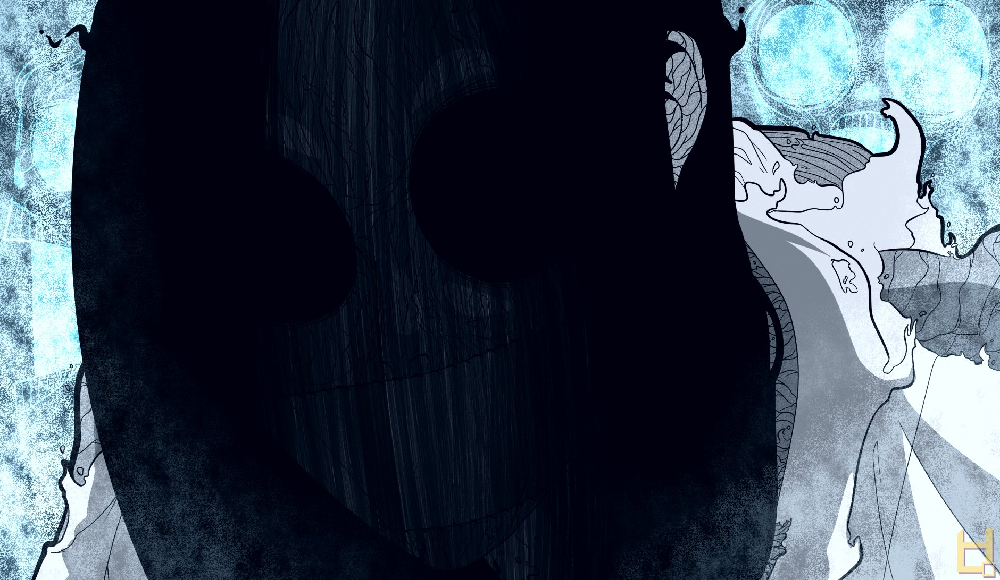

Aghata está viva
Atualizado dia 08/05/2020 às 13h10m58s Teoria
Teoria- Original
- A Ordem Paranormal

Thiago tem uma perícia em armas de fogo como pistolas e revólveres, como também de armas brancas, como a espada dada para fazer a Varredura. também é notável o vício em cigarro, apesar de após os acontecimentos do primeiro caso, tenha tentado largar de vez, com algumas recaídas em momentos difíceis.
Linha do Tempo
- Fez parte do grupo que participou da Transcessão na Escola
umMarco